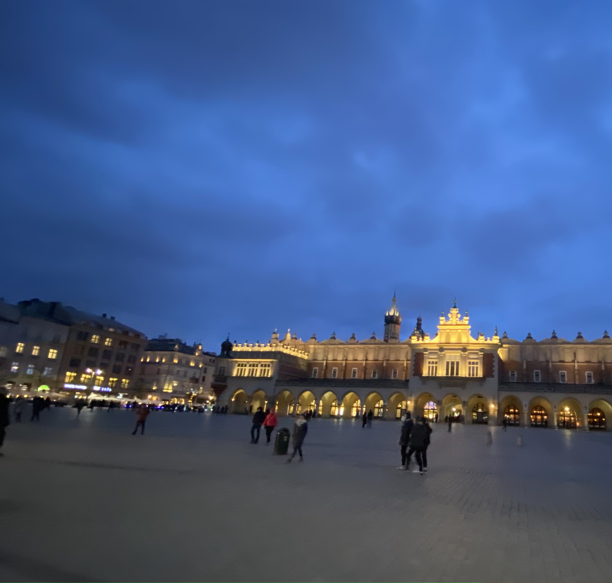
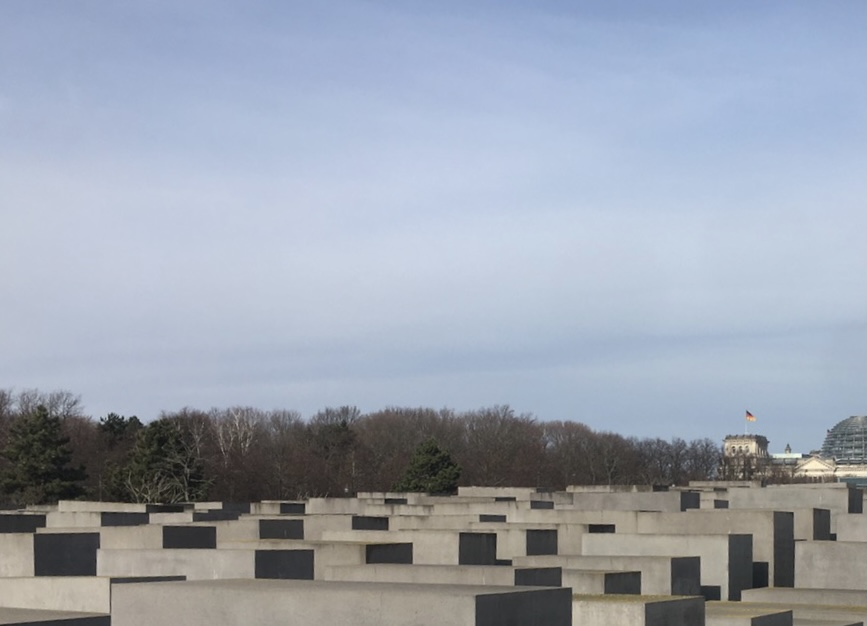
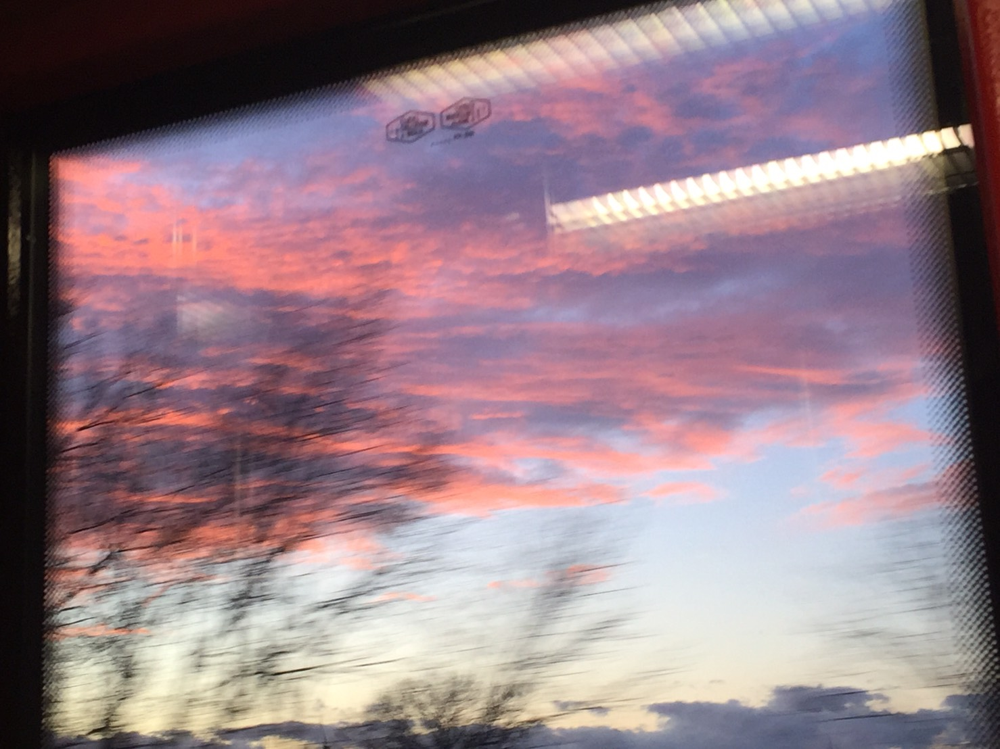
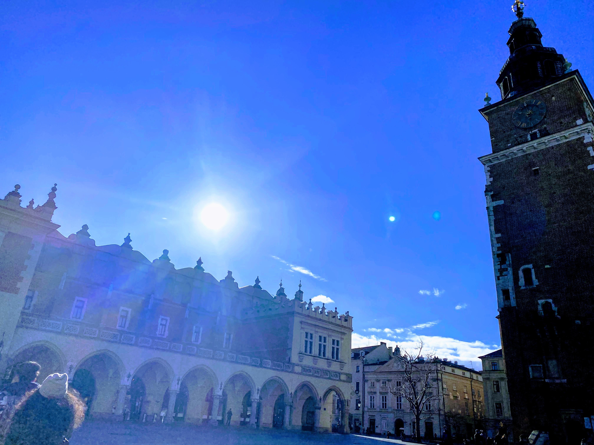
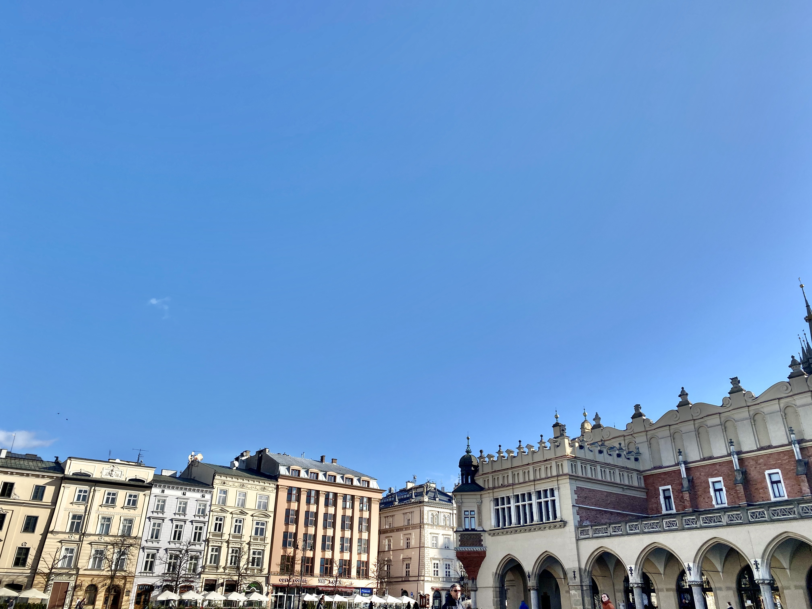
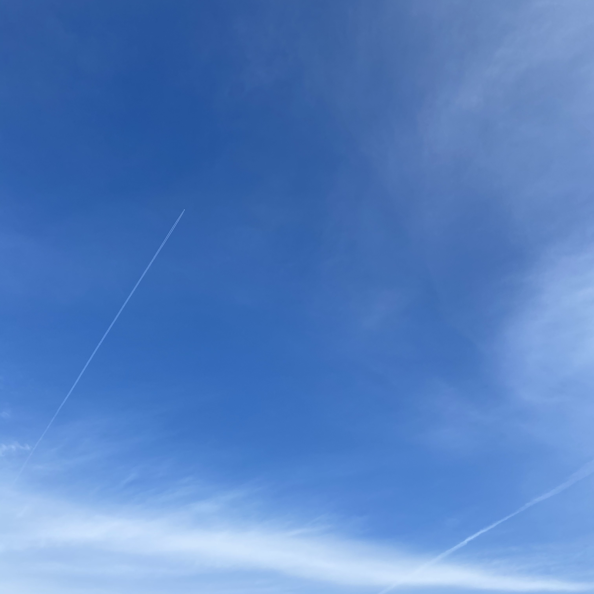
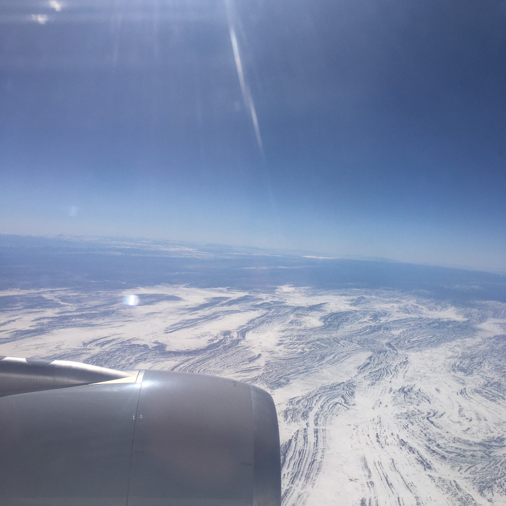
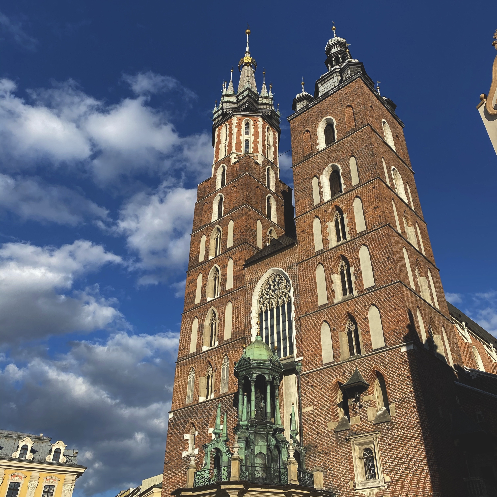

ポーランドにあるクラクフ歴史地区、午後五時すぎの様子。撮影した場所の真後ろにzaraがあった所にギャップを感じた。

ベルリンにあるホロコースト記念碑。 この資料館は出口から地上に上がると、入る時までは全体としてしか捉えることができなかった無数の石碑を、下から見上げるような形になり、石碑個々の大きさが浮かび上がる仕掛けとなっている。

アウシュビッツ収容所を訪れた帰りのバスから見えたポーランドの夕焼け。バスの左側に乗っていてラッキーだった。

クラクフ歴史地区、正午ごろの様子。太陽もしっかり入るのか試そうと撮った写真。眩しすぎて一瞬だけカメラを向けたが、かなりくっきりと映った。

クラクフ歴史地区、左と同様の時刻の空。よく晴れて、空気が澄んでいた。ヨーロッパ、どこを切り取っても絵になる。

ベルリン、トポグラフィーオブテラー博物館の空。この日は何度も飛行機雲に遭遇した。よく見ると左の雲の先に飛行機が見える。（ヘッダー参照）

ベルリンに向かっている機内から。
雲を下から見たり、山の上の雪を見下ろしたりできるのは飛行機に乗っているときの一つの楽しみである。

聖マリア教会。正時ごとにトランペットの音が鳴り響く。この日は空の色がとても濃かった。

ベルリン中心地の夜景。とても暗い中、街頭と星を歩きながら撮ろうとしたら図らずも長時間露光したような写真が撮れた。